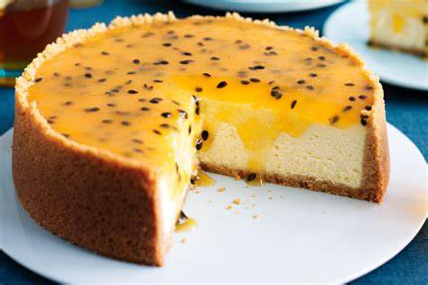
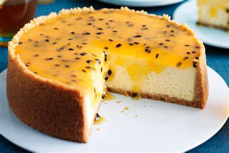
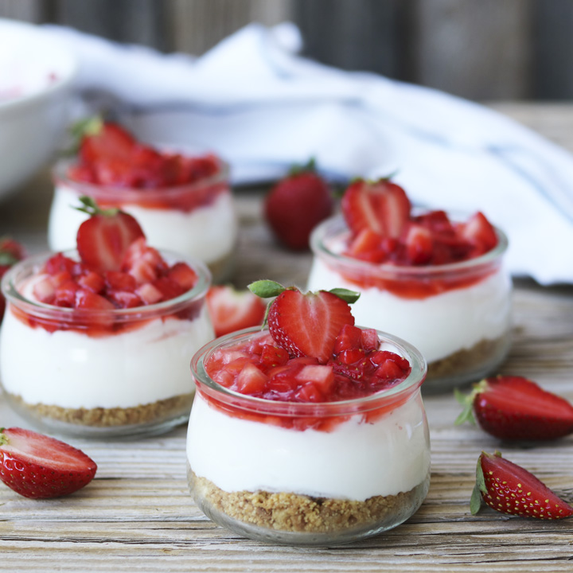
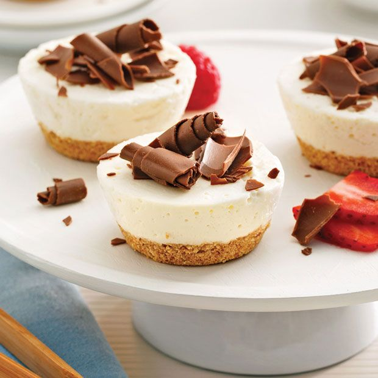

CHEESECAKE
 

Ingredientes
- 150 gramos de galletas tipo Digestive, Campurrianas, Lincoln, Boca de Dama o similares
- 90 gramos de mantequilla a temperatura ambiente (pomada)
- 700 gramos de queso crema de buena calidad (entero)
- 120 gramos de azúcar
- 50 gramos de almidón de maíz (Maizena) o harina de arroz o harina común
- 4 huevos
- 200 cc de nata para montar (crema de leche)
- Ralladura de medio limón o 1 cucharadita de esencia de vainilla o 1 sobrecito de azúcar vainillado
- Para la cobertura: Mermelada, dulce de leche o confitura (cantidad necesaria)


Paso a Paso
- Tritura las galletas hasta obtener un polvo fino
- Mezcla las galletas trituradas con la mantequilla hasta formar una masa
- Forra el fondo de un molde desmontable con papel de hornear y coloca la masa de galletas en el fondo, presionando bien
- Si prefieres la base crocante, hornea la base a 180°C durante 5 minutos
- En un bowl grande, bate el queso crema hasta que esté liso y cremoso
- Agrega el azúcar, el almidón de maíz (o harina) y el aromatizante (limón o vainilla). Revuelve suavemente hasta integrar todo
- Añade la nata (crema de leche) y mezcla nuevamente
- Incorpora los huevos uno a uno, integrando bien después de cada adición
- Vierte la mezcla sobre la base de galletas en el molde
- Hornea a 180°C durante aproximadamente 35 a 45 minutos, hasta que esté firme en el centro
- Deja enfriar y luego refrigera durante al menos 4 horas o toda la noche
- Antes de servir, añade la cobertura de tu elección (mermelada, dulce de leche, etc.)